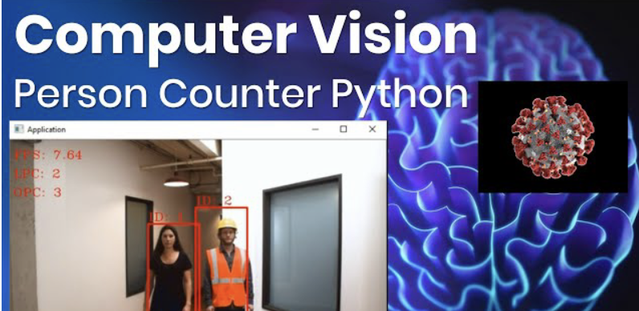

Professional Experience
Data Scientist @ Accenture
Following are the projects I worked on at Accenture
Analytical Projects

Demand forecast for USA’s largest steel manufacturer
Developed time series forecasting models to accurately predict the monthly demand three months in advance
Utilized six years of historical data to train ARIMA and Prophet models for forecasting purposes.
Incorporated macroeconomic and third-party indicators to enhance the model's predictive capabilities.Created an interactive dashboard using POWERBI to effectively present and visualize the forecasted results.
(EDA, Time series forecast, Visualization)

Enhanced leading Healthcare Client Marketing through Customer Segmentation"
Employed the DBSCAN algorithm to perform comprehensive customer segmentation for a healthcare client,utilizing data on demographics, purchase history, and behavioral patterns.
The application resulted resulted in the successful identification of distinct customer segments within the healthcare client's customer base.By leveraging the segmented groups, the targeted marketing efforts of the client experienced a significant boost, leading to a remarkable 10% increase in marketing effectiveness.
Furthermore, the implementation of the model enhanced customer interactions, allowing for more personalized and tailored engagement strategies based on the unique characteristics and needs of each customer segment.
(Data Engineering, Python, Data analysis, clustering, DBSCAN algorithm, Matplotlib, Customer Segmentation)
Price Prediction for Mercari Products using Random Forest Regression"
The goal was to predict pricing model for products on the Mercari platform and suggest the appropriate price for a product based on its description, brand name, and category
The implementation of this model provided enhanced user experience, potential for increased sales and revenue, and a competitive advantage for Mercari.
(Data Engineering, Python, Regression, , Random forest algorithm, Matplotlib, Price prediction)
Investigation for a Fortune 200 UK based Retailer
Understanding the journey of different elements in the marketing universe and mapping out data footprints at each step in the journey :Planning-> Request ->Generation ->Product Tagging ->Mailing /Customer Tagging -> Redemption
Data Validation, Pre-processing and Extensive Exploratory Data Exploration; Sharing key insights with business Forecast Integration
The integration of marketing elements increased forecast accuracy by 4.5%.
(HQL, Python, EDA, Data Validation, Documentation, Insight Generation & Presentation, Data Analysis, Machine Learning)
Academic Projects
Humana Mays Data Science Case Competition
Top 35 across all Universities in US Predicted vaccine hesitancy of US residents & leveraged analysis for personalized awareness campaigns • Used Feature selection and classification techniques with an accuracy of 85.6%.

Student Count Tracker
Created a student count tracker using OpenCV for the Technology and Gaming Club at Vellore Institute of Enginnering.
Education
University of Cincinnati
Masters in Science, Business Analytics
2022-2023
Courses: Intellience data analysis, Data Visualization,Big data integration, Statistical Models, Linear regression, Feature selection, dimensionality Reduction:PCA, SVD,Supervised & Unsupervised Machine Learning, Deep Learning, Time series & forecasting, Simulation methods, Optimization and Probability
GMR Institute of Technology
Bachelors in Engineering Technology, Electronics and Communication Engineering
2012-2016
Courses: Probability & statistics,Data Structure & Problem Solving, Database Management Systems, Object Oriented Programming, Cloud computing